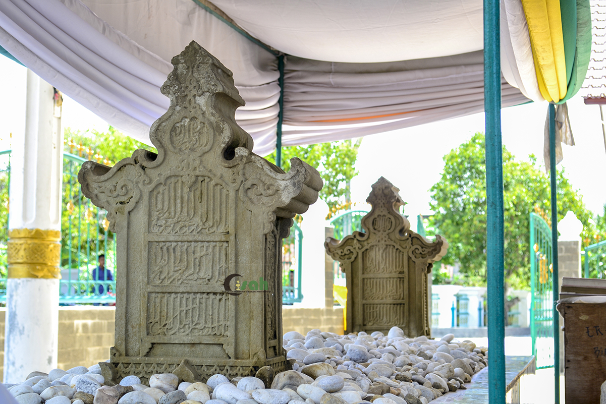

Galeri Peninggalan

Makam Sultan Malikussaleh
Situs tua yang menunjukkan bahwa Kerajaan Samudera Pasai adalah kerajaan Islam pertama di Indonesia.
Baca SelengkapnyaKoin Dirham Emas
Mata uang dari Samudera Pasai yang menjadi bukti kejayaan ekonomi dan perdagangan.
Baca Selengkapnya
Lonceng Cakra Donya
Peninggalan bersejarah dari abad ke-15 yang merupakan simbol hubungan diplomatik antara Kesultanan Aceh dan Tiongkok.
Baca SelengkapnyaMakam Ratu Nahrasiyah
Peninggalan penting yang mencerminkan peran pemimpin perempuan dalam sejarah Islam awal di Nusantara.
Baca SelengkapnyaHikayat Raja-raja Pasai
Karya sastra sejarah yang menceritakan asal-usul, keislaman, dan kejayaan Kerajaan Samudera Pasai.
Baca SelengkapnyaTradisi Peutron Aneuk
Tradisi adat Aceh untuk menyambut kelahiran anak, sebagai ungkapan syukur dan doa keselamatan bagi sang bayi dan ibu.
Baca Selengkapnya